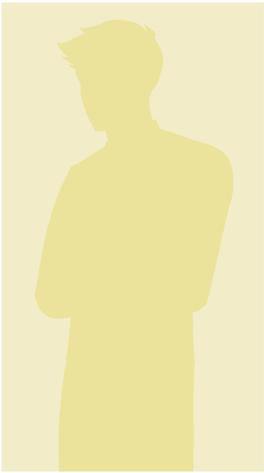
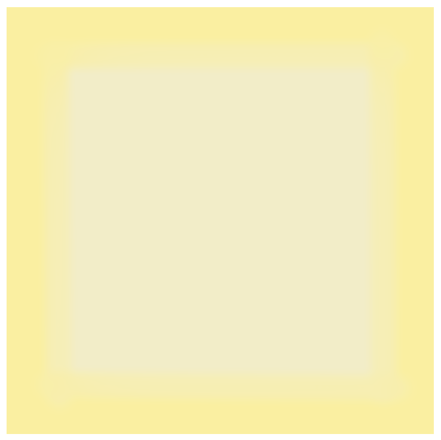
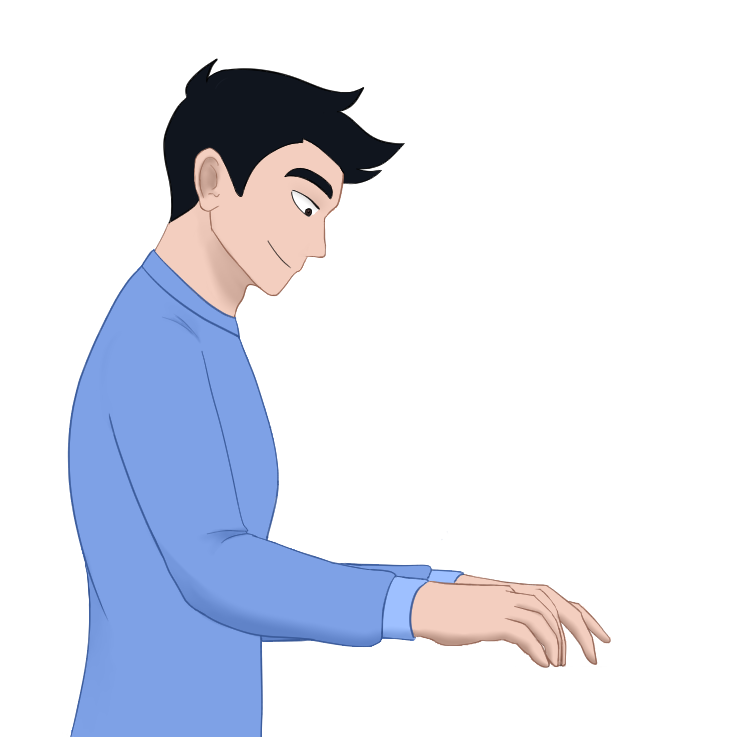
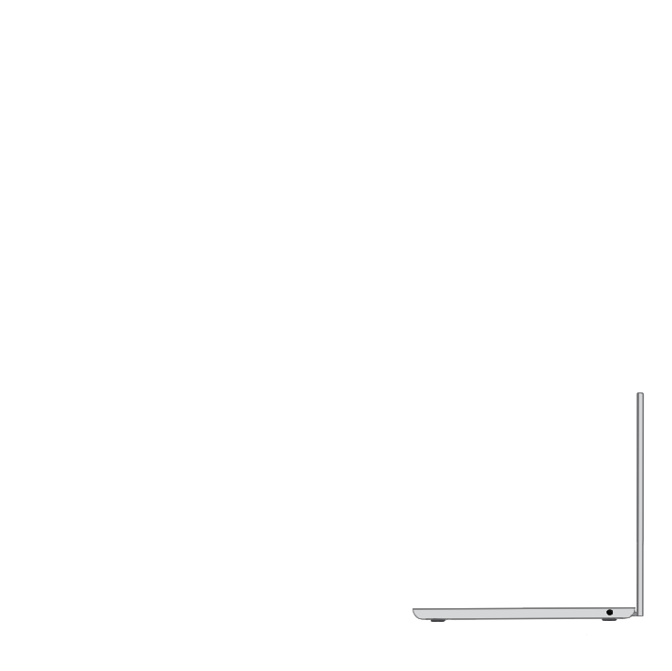

Hey,
I'm Richard.

My Projects



About me
After graduating from high school, I spent two years exploring different career paths to see what I might like. It was during this time that I stumbled upon programming after watching Java tutorials, and I decided to pursue a degree in Computer Science at Langara.
At Langara, I learned Java, JavaScript, C++, and Python, alongside database management with Microsoft SQL and MongoDB. Though when I dabbled into websites, I realized that I enjoyed adding functionality to sites and seeing them come to life as I build upon them.
Now, I’m focused on honing my programming skills through personal projects, with the goal of making an impact.